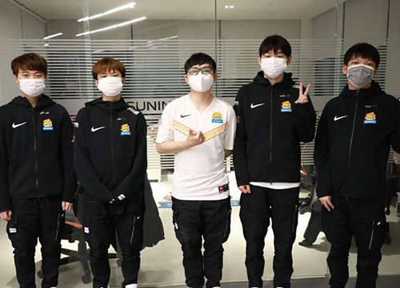
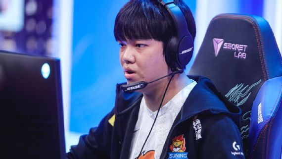

Quay lại trang chủ
Suning Gaming, chú ngựa ô của Chung Kết Thế Giới 2020
Cùng nhìn lại con đường đã dẫn SN đến với trận tứ kết tới đây với JDG
Trong trận đấu thứ hai của vòng tứ kết CKTG 2020, Suning Gaming sẽ có cuộc đối đầu với một đại diện khác tới từ Trung Quốc đó chính là JD Gaming. Với phong độ ấn tượng của mình, Suning đang thực sự trở thành một chú ngựa ô tại mùa giải này và trước khi trận đấu này diễn ra, hãy cùng nhìn lại quá trình của họ trên con đường đến với trận đấu vô cùng quan trọng sắp tới nhé.
Mùa giải năm nay, Suning đã khởi đầu không được tốt và họ bước vào mùa giải hè với một kỳ vọng không thực sự lớn. Đã luôn có những tin đồn về sức mạnh của đội tuyển này trong những buổi đấu tập nhưng những kết quả đó đều không được thể hiện trong những trận đấu chính thức, ngay cả khi Bin trở thành đường trên trong đội hình xuất phát của họ.
“Tôi không đặt nhiều kỳ vọng vào đội tuyển này, đặc biệt là sau mùa xuân”, bình luận viên kênh LPL English Robert “Dagda” Price nói. “Bin và Biubiu ở mùa giải xuân là hai trong số những người đi đường trên có thành tích tệ nhất tại LPL. Suning không phải là một đội có thể giao tranh tổng trực diện đặc biệt tốt, mà đó lại là meta của thời điểm đó. Họ thực sự gặp khó khăn trong việc thiết lập giao tranh một cách hợp lý và các cuộc giao tranh của họ thường chuyển thành những tình huống dàn trải dựa vào kỹ năng cá nhân của người chơi để giành lấy phần thắng.“

Trận đấu đầu tiên của họ trong mùa hè không thể xóa tan những nghi ngờ. Trong trận đấu với đội tuyển cũ của người đi rừng của Lê “SofM” Quang Duy, LNG Esports, Suning thể hiện sự do dự trong việc đưa ra những quyết định trên bản đồ. Cả hai đội đều thiếu sự chủ động, và dù cho Suning giành chiến thắng với tỷ số 2-0, rất khó để tìm thấy sự tích cực ở cả hai đội ngoài kỹ năng cá nhân.
“Trận đấu với LNG là … một cái gì đó như là“, bình luận viên của kênh LPL English Joseph “Munchables” Fenny chia sẻ, anh cũng đã từng cùng bình luận trận đấu này với Dagda. “Thực sự là có rất nhiều tình huống bị kéo dài quá mức và những sai lầm không đáng có tới từ cả hai phía, nhưng ngay cả khi đó bạn vẫn có thể thấy một chút táo bạo trong lối chơi của Suning, thứ mà chúng ta đang được chứng kiến họ thẻ hiện trước những người giỏi nhất thế giới.“
Lời phê bình đó là xu hướng của Suning trong suốt giai đoạn vòng bảng mùa hè. Họ có những tuyển thủ giỏi, những bình luận viên và các nhà phân tích đã nói nhiều lần về điều này trên cả kênh phát sóng bằng tiếng trung lẫn tiếng anh, nhưng họ không kết hợp thực sự tốt với nhau như một đội.

Trong khi JD Gaming và Top Esports vẫn thể hiện được họ là hai đội tuyển LPL đáng gờm nhất, Suning lại tỏ ra có đôi chút hụt hơi trong những vòng đấu tiếp theo khi thất bại trước Invictus Gaming. Ngay cả Victory Five, đội tuyển được Suning cho mượn 3 tuyển thủ là Biubiu, người đi rừng Wei “Weiwei” Bo-Han và người đi đường dưới Lee “Samd” Jae-hoon – cũng được ca ngợi là đội mạnh hơn Suning do khả năng phối hợp của họ và hơn thế nữa là khả năng lên kế hoạch trong trận đấu.
Trong trận đấu đầu tiên của họ trước JDG, mặc dù Suning đã thất bại với tỷ số 2-0, màn trình diễn của họ đã khiến Dagda bắt đầu chú ý tới đội tuyển này.
“Mặc dù JDG trông có vẻ như rất mạnh và Suning là những người thất bại chung cuộc, nhưng đây đáng lẽ phải là chiến thắng 2-0 cho Suning,” Dagda nói. “Giai đoạn đầu và giữa trận của họ thật đáng kinh ngạc, và họ chỉ thất bại do một vài quyết định sai lầm đáng tiếc ở cuối trận.“
Trong suốt giai đoạn vòng bảng mùa hè, Suning được không được đánh giá quá cao dù cho họ là một trong những đội tuyển thuộc top đầu. Rõ ràng họ có những tuyển thủ giỏi, có sự kết hợp hoàn hảo giữa những cựu binh dày dặn kinh nghiệm trong và SofM với những tài năng trẻ đang lên như huanfeng, Bin và Angel. Bên cạnh đó, Meta hiện tại đang phù hợp với đội. Bin đã trở thành tuyển thủ LPL có nhiều pha solo kill nhất trong khi huanfeng được ca ngợi là một trong những người đi đường dưới tốt nhất của giải đấu và liên tục giành được danh hiệu MVP.
Trong suốt giai đoạn vòng bảng mùa hè, Suning được không được đánh giá quá cao dù cho họ là một trong những đội tuyển thuộc top đầu. Rõ ràng họ có những tuyển thủ giỏi, có sự kết hợp hoàn hảo giữa những cựu binh dày dặn kinh nghiệm trong SwordArt và SofM với những tài năng trẻ đang lên như huanfeng, Bin và Angel. Bên cạnh đó, Meta hiện tại đang phù hợp với đội. Bin đã trở thành tuyển thủ LPL có nhiều pha solo kill nhất trong khi huanfeng được ca ngợi là một trong những người đi đường dưới tốt nhất của giải đấu và liên tục giành được danh hiệu MVP.